下面每一張都是真的把元件渲染出來拍的：正式建置的前端
+ 一組假成員、假作答紀錄的 fixture 資料，用 Playwright 在 Chromium
裡截圖（pnpm docs:screenshots）。
畫面跟正式站一字不差，只有資料是假的 ——
抹片圖是示意圖，不是真的血液抹片。
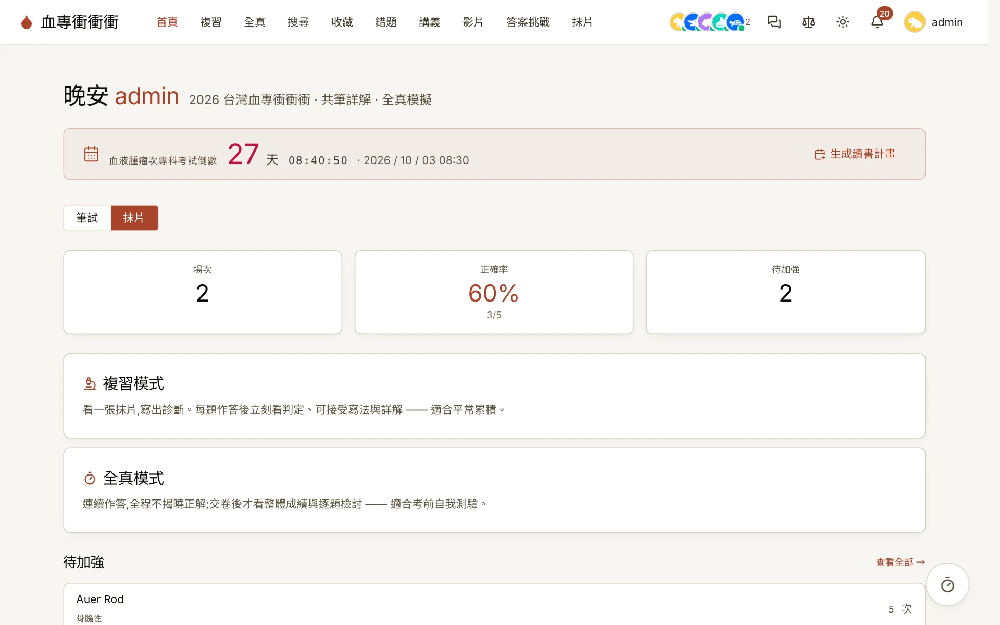
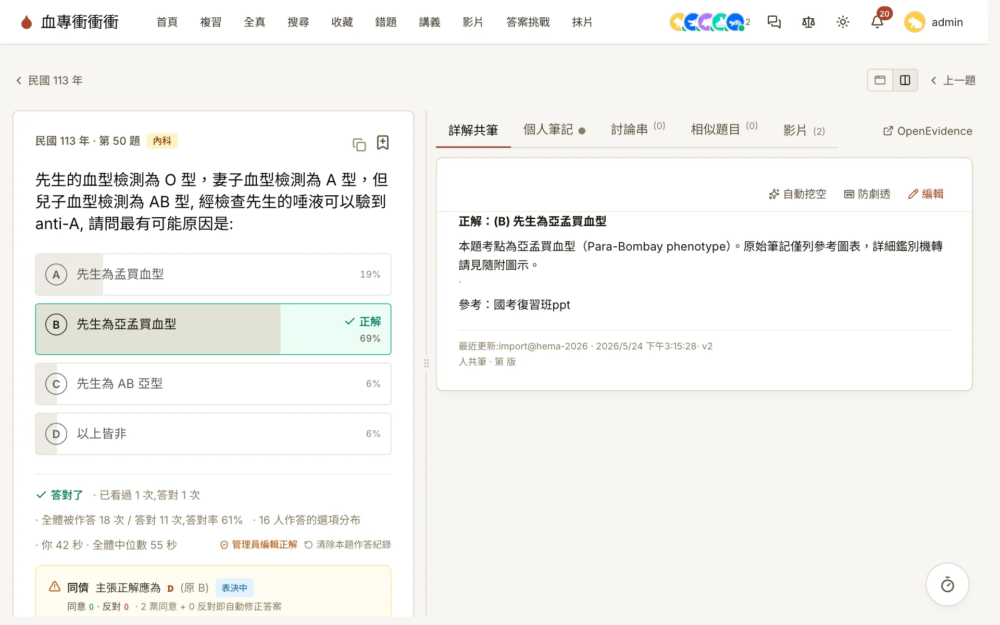
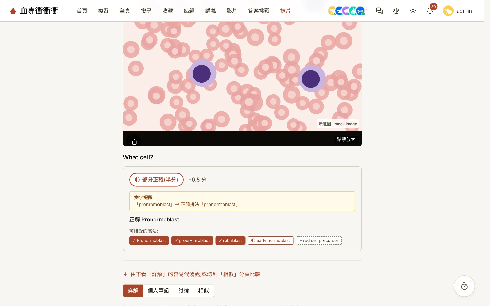
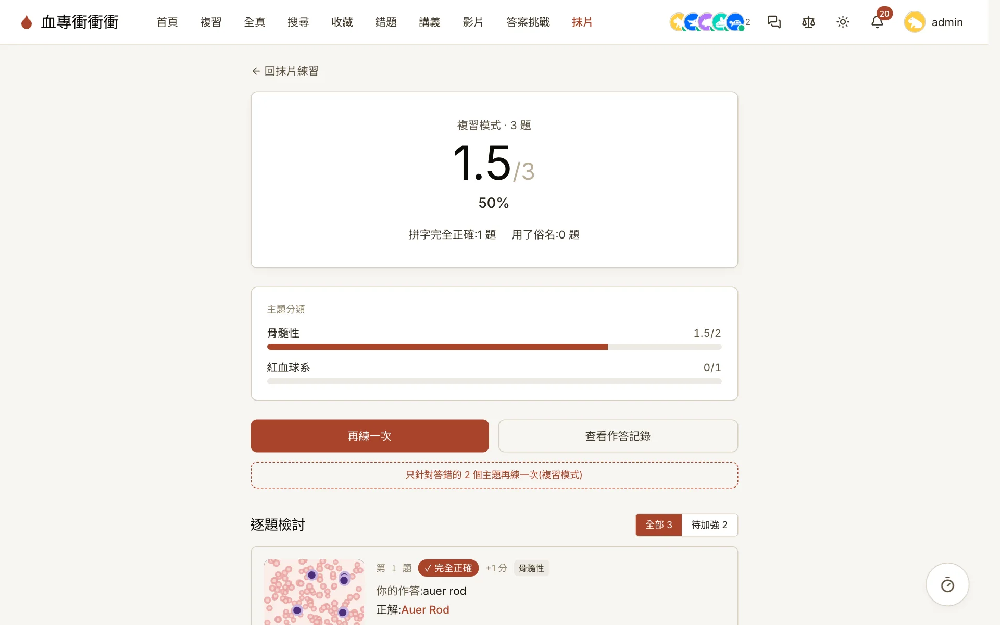
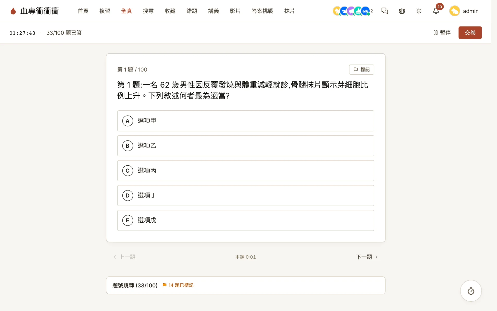
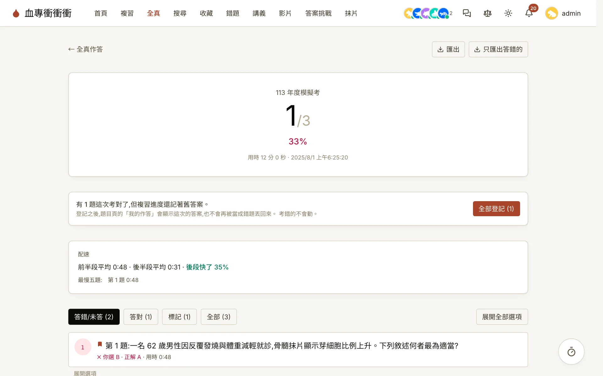
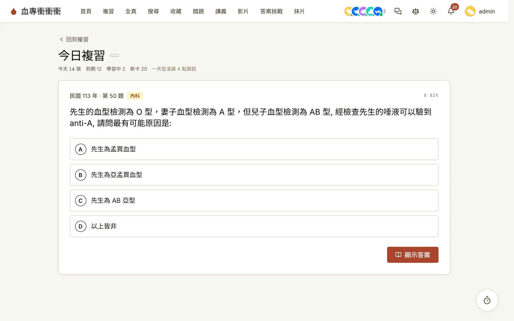
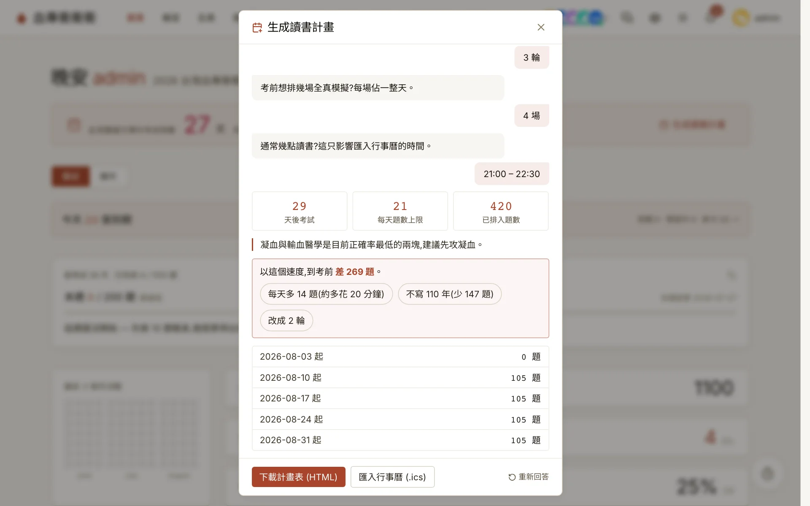
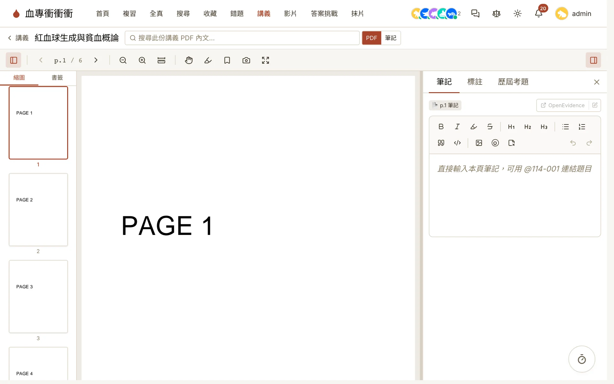
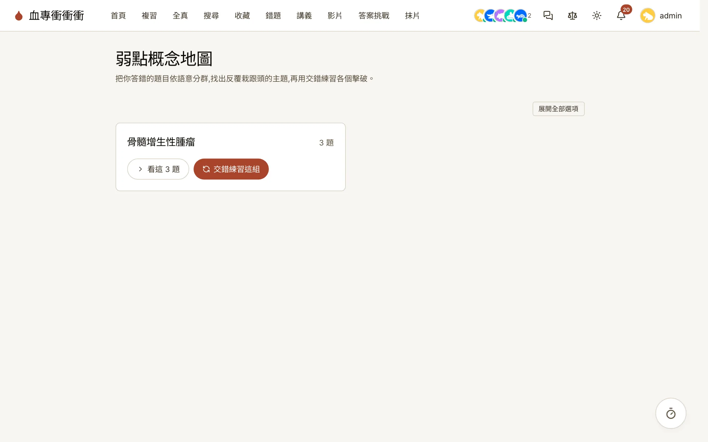
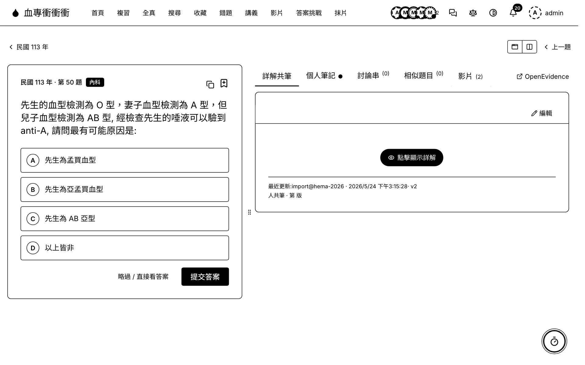
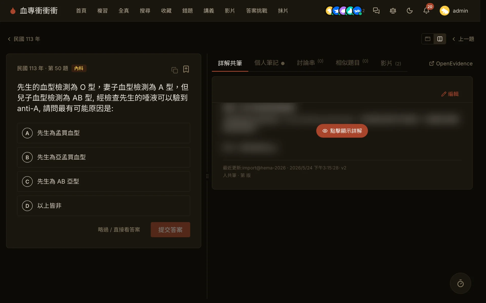
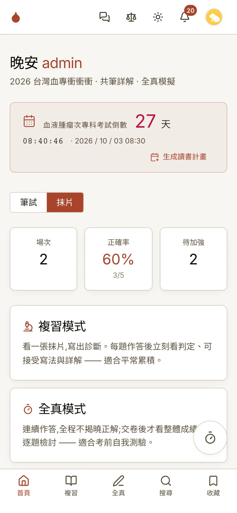
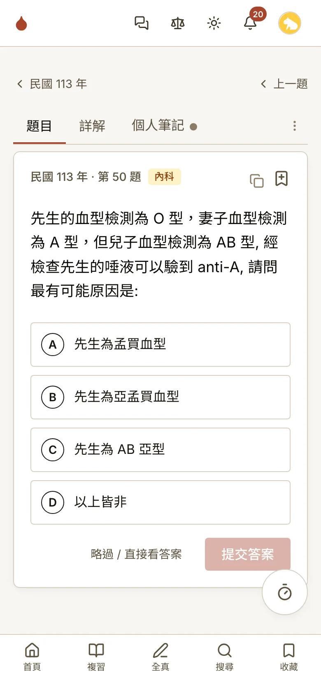
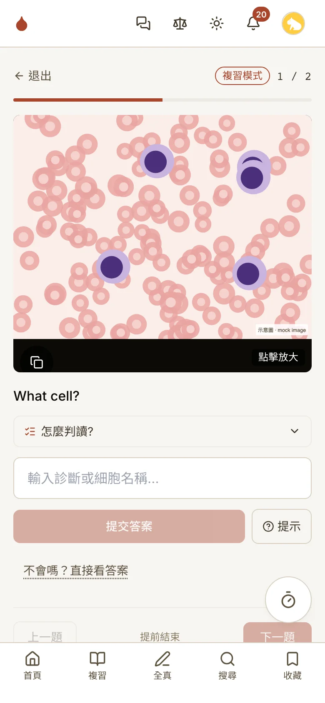
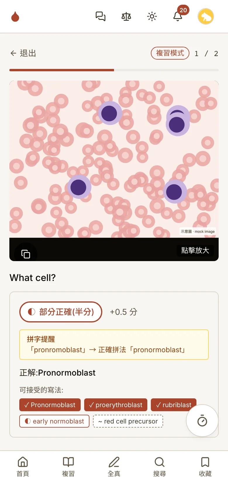
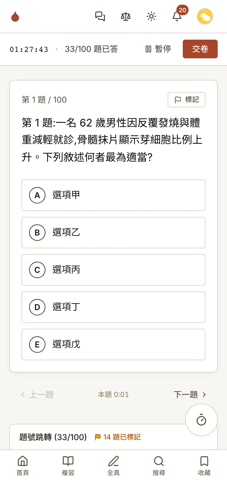
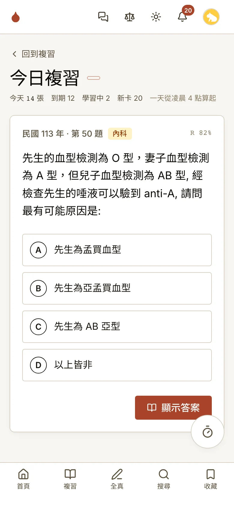
更多畫面（開場設定、交卷確認、診斷詳情、搜尋、個人資料…）在 使用手冊裡逐章對照。
準備專科考試的小組，通常已經有一個共用資料夾、一個聊天群組，和一份沒人敢動的 Word 詳解檔。三者各自失效的方式不同，但結果一樣。
查過的資料躺在聊天記錄裡。下一個人讀到同一題時找不到，於是再查一次。 一年下來同一題被查了七遍。
反覆看詳解會產生「我懂了」的熟悉感，但那不等於考場上叫得出來。 熟悉度與提取能力是兩件事。
人傾向重複複習「已經會的」，因為那讓人舒服。真正該複習的， 是那些剛好快要忘記的。
每個模組都對應一個在認知心理學裡被反覆驗證的效應。這是取捨的依據 —— 做不到對應某個機制的功能，就不做。
刻意不做的：排行榜、連續天數徽章、積分。 外在誘因會排擠掉本來就存在的內在動機，而準備專科考試的人不缺動機。 這裡唯一的「遊戲化」是一個跟刷題完全零耦合的 2048 —— 休息就讓它只是休息。
兩種主要讀法，加上圍繞它們的協作與排程。
| 模組 | 做什麼 |
|---|---|
| 複習模式 | 單題練習，作答後即時揭曉。底下是協作 wiki 詳解（rich text + 圖片）、討論串、個人筆記（一題可多則）、螢光畫記（跨裝置同步） |
| 全真作答 | 整年份計時模擬，可中途離開再續作。交卷後成績、錯題回顧、標記題複查 |
| 抹片練習 | 看圖填診斷。複習模式逐題揭曉、全真模式計時交卷；四層判定（全對／半對／俗名／錯）+ 拼字提醒；成績按主題拆開、錯題按診斷聚合；診斷詳情頁有共筆詳解、可接受寫法清單與「這個寫法也該算對」提報投票；成員可投稿圖片由管理員審核 |
| 間隔複習 | FSRS 排程，跨年份到期佇列，每日新卡上限 |
| 共筆與討論 | 詳解採悲觀鎖 + 版本歷史；討論串支援 @提及與 in-app 通知；答案挑戰可對官方答案提異議、投票升級 |
| 讀書計畫 |
對話式問卷 → 逐日計畫表（可列印 HTML）+ 可匯入行事曆的
.ics
|
| 學習分析 | 信心校準曲線、弱點地圖（語意分群，索引未涵蓋時退回主題分群）、活動 heatmap、逐次作答 CSV 匯出 |
| 閱讀輔助 | 講義 PDF 線上閱讀器（畫記、便利貼、頁面錨定筆記、全文搜尋）、教科書選字引用、依主題策展的教學影片 |
| 觸達 | PWA 離線閱讀、Telegram 每日推題機器人、聊天大廳、電子紙模式（純黑白 1-bit，給 e-ink 閱讀器）、手把操作 |
這個 repo 本身是「2026 台灣血液腫瘤科專科考試」的部署， 但沒有任何一行程式碼知道那件事。
所有跟專科有關的東西 ——
名稱、網域、管理者、考試日期、年份範圍、分類標籤 —— 全部集中在一個
gitignore 的 config.toml。程式碼讀它，不讀硬編碼的字串。
分類（「內科」「共同」之類）是資料不是列舉型別，
所以換一個專科只要換一份題庫 CSV 和一份設定。
專科名稱、題庫內容、年份範圍、分類體系、考試日期、成員名單、 主題白名單（弱點分群與影片策展用）
上面「為什麼是這些模組」列的每一條 —— 提取練習、間隔、交錯、 合意困難、校準。這些是人怎麼記東西，跟考哪一科無關
設計上的判準：任何「只有血液腫瘤科需要」的東西都不寫進核心。 會不會判斷紅血球形態、要不要背染色體轉位，那是題庫的事； 系統只負責讓題庫被有效率地讀進腦子裡。
唯一的例外是抹片練習，它確實是為血液抹片判讀而生的。所以它被做成一個
完全獨立的模組：自己的題庫、作答紀錄、搜尋索引，跟
MCQ 題庫零耦合； 首頁要以它為主還是以筆試為主，只是
config.toml 裡一個值 （[home] primary_mode）。別的專科 fork 不啟用它，其餘一切照舊。
全站在 Cloudflare 免費額度內，20 人規模長期零成本。沒有伺服器要顧，也沒有密碼要存。
需要一個 Cloudflare 帳號（免費）和一份題庫 CSV。所有 per-fork
的識別字串都在
config.toml。
| 步驟 | 指令 |
|---|---|
| 互動式設定 | ./scripts/setup.sh |
| 本機驗證 |
pnpm dev + pnpm --dir frontend dev
|
| 部署 | ./scripts/deploy.sh |
| 白名單 |
node --experimental-strip-types scripts/sync-access.ts
|
| 匯入題庫 |
node --experimental-strip-types scripts/import-questions.ts
./questions.csv
|
完整步驟見 README 的 Forking 章節； 踩過的坑與架構決策整理在 Wiki。
{kind=link}
{kind=link}
{kind=link}
{kind=link}
{kind=link}
{kind=link}
{kind=link}
{kind=link}
{kind=link}
{kind=link}
{kind=link}
{kind=link}
{kind=link}
{kind=link}
{kind=link}
{kind=link}
{kind=link}
{kind=link}